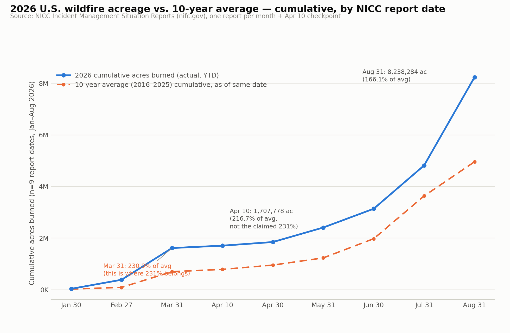

The two headline totals through August, and the April 10 acreage figure, are exact matches to the National Interagency Coordination Center's (NICC) own dated Incident Management Situation Reports (IMSR) — the same series NIFC's website reports from. But the “231 percent of the ten-year average” figure attached to April 10 does not appear in any NICC report and does not follow from NICC's own published numbers for that date, and the “9 deaths” figure could not be traced to NIFC/NICC at all.
NICC's IMSR "Fires and Acres Year-to-Date (by Protection)" table — the all-jurisdiction, all-fire national YTD series (not a large-fire-only or federal-only count) — is the correct series for these figures. Pulling the two relevant dated reports directly from nifc.gov and reading their totals lines:
| Report date | YTD fires | YTD acres | Claim value | Match? |
|---|---|---|---|---|
| Aug 31, 2026 | 52,253 | 8,238,284 | 52,253 fires / 8,238,284 acres | Exact |
| Apr 10, 2026 | 19,102 | 1,707,778 | 1,707,778 acres | Exact |
NICC's Apr 10, 2026 report lists a ten-year average (2016–2025, same calendar date) of 788,185 acres — but prints no percentage at all. Checking every 2026 report from January through May confirms NICC had not yet added a "% of Ten Year Average" column to the report; it first appears starting with the June 30, 2026 report. Computing the ratio directly from NICC's own April 10 numbers (1,707,778 ÷ 788,185) gives 216.7%, not 231%.
Tellingly, 230.9% (rounds to 231%) is the correct ratio — for a different date, March 31, 2026 (1,615,683 acres ÷ a 699,816-acre average). The claim's "231 percent" appears to have been spliced from March 31's ratio onto April 10's acreage total — two real NICC numbers from two different dates, combined into a single false statistic.
| Report date | YTD acres (n) | 10-yr avg acres | Computed % of avg | NICC-printed % |
|---|---|---|---|---|
| Jan 30 | 34,965 | 23,591 | 148.2% | — (not yet published) |
| Feb 27 | 385,991 | 91,529 | 421.7% | — (not yet published) |
| Mar 31 | 1,615,683 | 699,816 | 230.9% | — (not yet published) |
| Apr 10 | 1,707,778 | 788,185 | 216.7% | — (not yet published) |
| Apr 30 | 1,848,210 | 954,514 | 193.6% | — (not yet published) |
| May 31 | 2,410,718 | 1,233,552 | 195.4% | — (not yet published) |
| Jun 30 | 3,138,394 | 1,977,688 | 158.7% | 159% |
| Jul 31 | 4,818,250 | 3,634,306 | 132.6% | 133% |
| Aug 31 | 8,238,284 | 4,959,302 | 166.1% | 166% |
The Jun–Aug rows show the computed ratio matches NICC's own printed percentage to the nearest whole point in every case where NICC published one — confirming "acres ÷ ten-year-average acres" is the right calculation, and that 216.7% is the genuine figure for April 10.

NICC's IMSR reports do not carry a running wildland-fire fatality count — that is tracked through separate NWCG safety channels not reached in this check. A web search surfaced "9 deaths" attributed to Wikipedia's "2026 United States wildfires" page, but as of that page's early-July 2026 state, not "through August" as the claim frames it. Presenting a July-vintage death count alongside August-vintage fire and acreage totals, as one as-of-August snapshot, is a second, independent problem with the claim's internal consistency.
Every 2026 NICC report checked (January through August) labels its baseline identically: "(2016 – 2025 as of today)" — a fixed ten-calendar-year window that does not shift within 2026. The only mid-year change found in the reporting series was the addition of the "% of Ten Year Average" display column itself, first appearing around June 2026 — which is precisely why no NICC report could have shown "231 percent" for an April 10 date.
The claim's fire/acreage totals for both August 31 and April 10, 2026 are accurate and traceable to NICC's own dated reports. But "231 percent of the ten-year average" for April 10 is not a real NICC figure — the real value is 216.7%, and 231% instead belongs to March 31 with a different acreage total — and the "9 deaths" figure is unconfirmed against any NIFC/NICC source and appears to be several weeks out of date relative to the claim's "through August" framing.